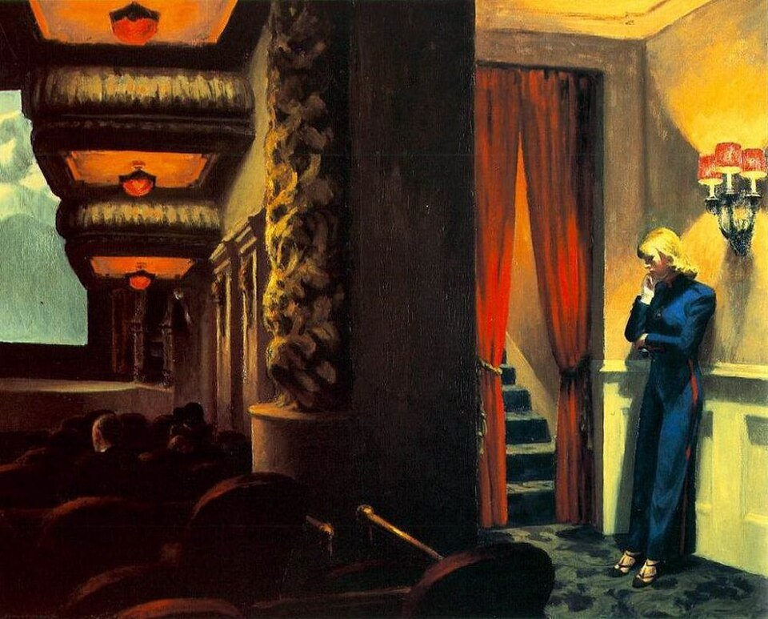

New York Movie
Edward Hopper · 1939 · Oil on canvas · 81.9 × 101.9 cm · Museum of Modern Art, New York
In copyright. Look and learn: shown for study, not for download.
Hopper began this in December 1938 and finished it in January 1939. The theatre is invented: he made more than fifty sketches inside the Palace, the Globe, the Republic and the Strand before he started. The usherette was posed by Jo Hopper under a lamp in the hallway of their apartment. Her records describe snow-covered mountains on the screen, which has led one historian to suggest the 1937 film Lost Horizon. It came to the Museum of Modern Art as an anonymous gift.